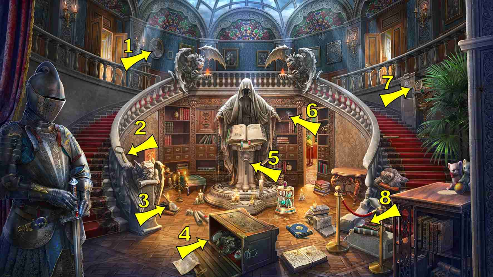
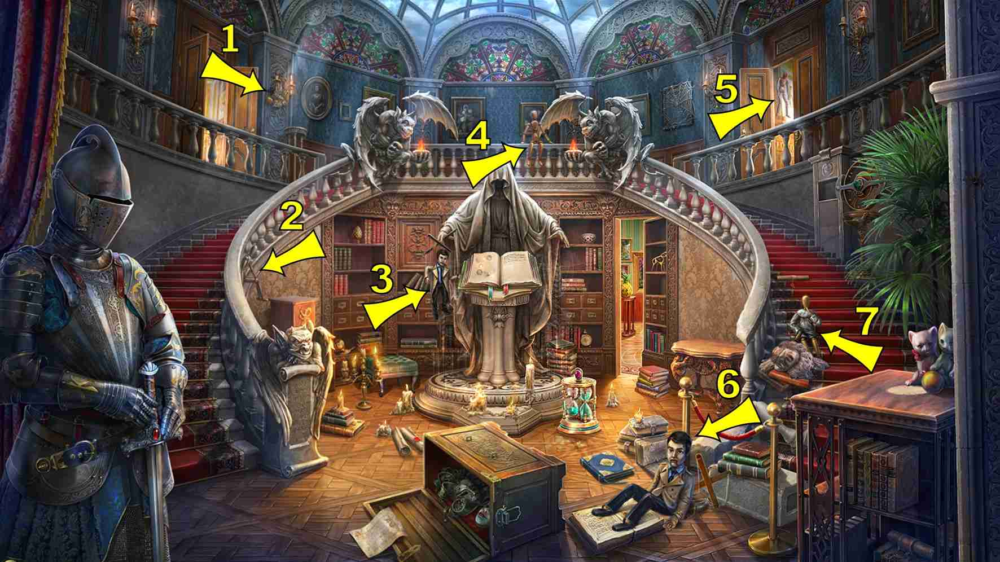
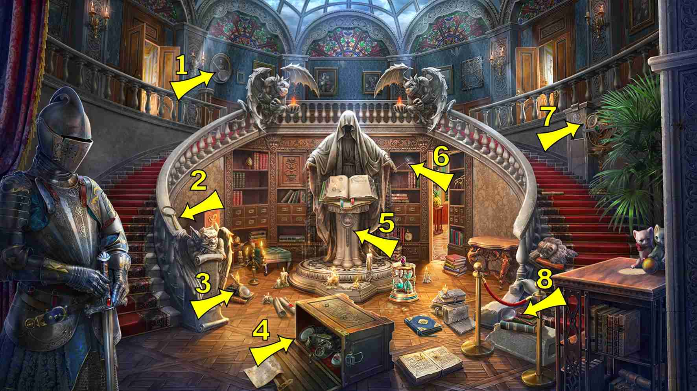
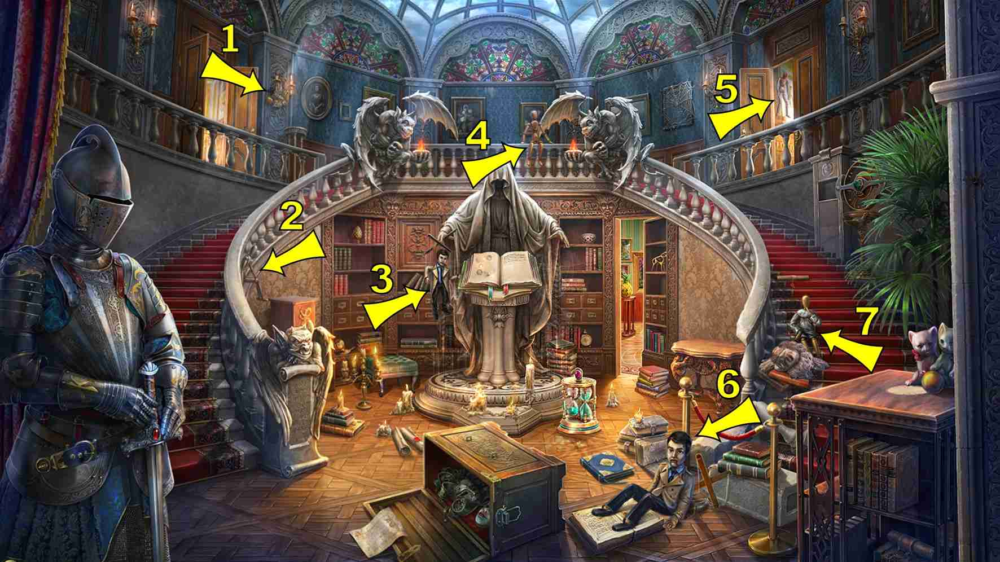
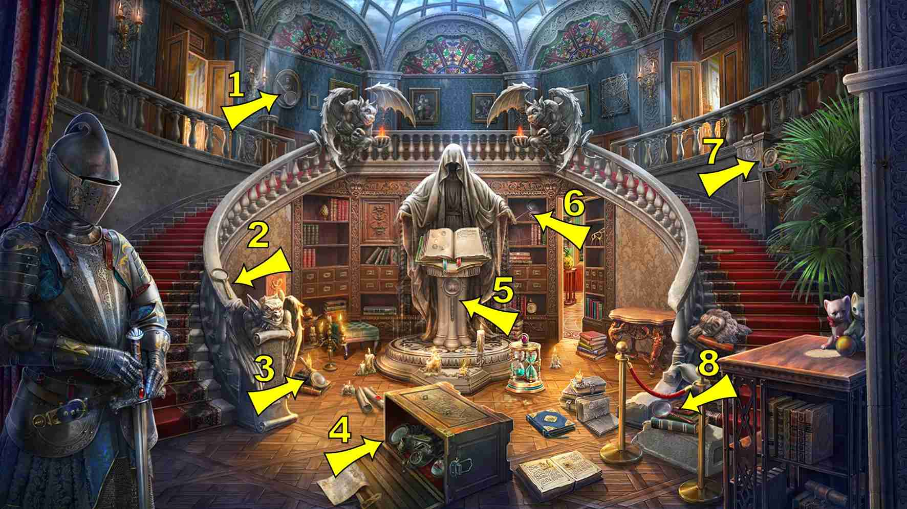
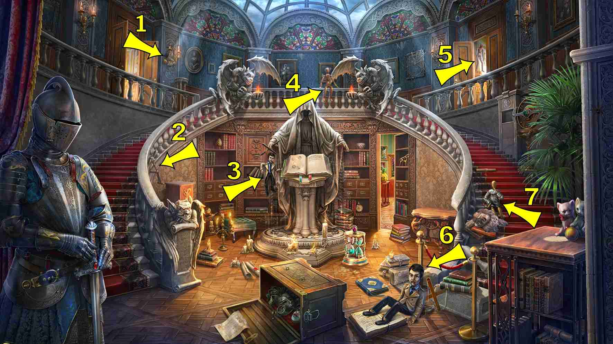

返回
Wiki
市政厅 City_Hall
B匕首
B半身雕像
B报纸
B捕鼠器
B玻璃瓶
C长笛
D单筒望远镜
D地图
D地球仪
D灯
D电话
D盾
F放大镜
F飞船
G公文包
G拐杖
G拐杖
G挂锁
J奖杯
J建筑模型
J胶卷
J节拍器
K开锁器
L六分仪
M密码筒
M帽子
M木偶
M木槌
M猫头鹰
M马蹄铁
N鸟笼
P苹果
Q全视之眼
S伞
S双筒望远镜
S扇子
S手印
S手帕
S手枪
S树苗
T天平
T头骨
W王冠
X信
X匣式吊坠
X小提琴
X相机
X雪貂
Y摇铃
Y烟斗
Z指路标志
Z蜘蛛网
F飞船 Airship
Q全视之眼 All-seeing Eye
P苹果 Apple
T天平 Balance Scales
Y摇铃 Bell
S双筒望远镜 Binoculars
N鸟笼 Birdcage
G公文包 Briefcase
J建筑模型 Building Model
B半身雕像 Bust Statue
X相机 Camera
G拐杖 Cane
W王冠 Crown
B匕首 Dagger
B玻璃瓶 Decanter
Z指路标志 Direction Sign
M密码筒 Encrypted Cylinder
X雪貂 Ferret
J胶卷 Film
C长笛 Flute
M木槌 Gavel
D地球仪 Globe
S手枪 Gun
S扇子 Hand Fan
S手帕 Handkerchief
S手印 Handprint
M帽子 Hat
M马蹄铁 Horseshoe
D灯 Lamp
X信 Letter
X匣式吊坠 Locket
K开锁器 Lock Picks
F放大镜 Magnifying Glass

D地图 Map
J节拍器 Metronome
B捕鼠器 Mousetrap
B报纸 Newspaper
M猫头鹰 Owl
G挂锁 Padlock
Y烟斗 Pipe
M木偶 Puppet

S树苗 Seedling
L六分仪 Sextant
D盾 Shield
T头骨 Skull
Z蜘蛛网 Spiderweb
D单筒望远镜 Spyglass
D电话 Telephone
J奖杯 Trophy Cup
S伞 Umbrella
X小提琴 Violin
G拐杖 Walking Stick


 


